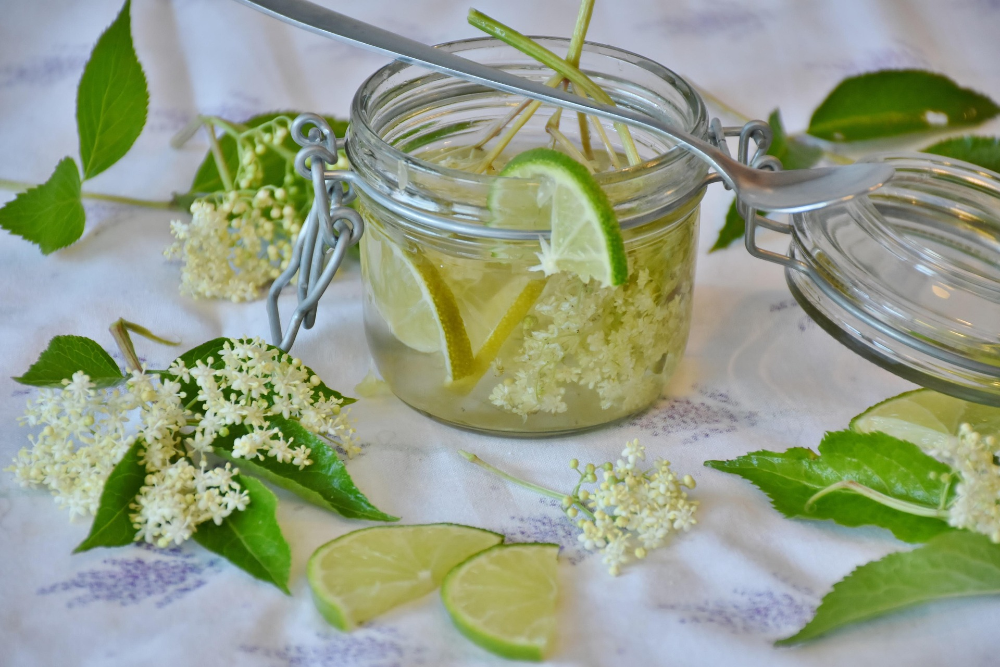

Shop
Nell’azienda agricola è presente un piccolo spaccio di prodotti locali.
Sono presenti diversi stakeholder di aziende locali interessate ad esporre e vendere la loro produzione all’interno dell’azienda.
Inoltre sono in vendita anche i prodotti ottenuti dalle materie prime coltivate all’interno dell’azienda, una parte dei prodotti è proprio quella che viene realizzata mediante le attività della fattoria didattica.
Il raccolto del vigneto viene inviato alla società agricola cooperativa ViVo Cantine, per la vinificazione.
|
 |
Sciroppo di sambuco
Ingredienti: fiori di sambuco, acqua, limoni, zucchero 10.00€ al L |

|
Grappa di mirto
Ingredienti: grappa bianca, mirtilli e zucchero 20.00€ al L |
|
|
Nocino
Ingredienti: malli di noce verdi, alcool buongusto, zucchero, acqua, cannella e limone 17.00€ al L |

|
Marmellata di pesche
Ingredienti: pesche, zucchero e limone 4.50€ per 270g |

|
Marmellata di mele
Ingredienti: mele, zucchero e cannella 4.50€ per 270g |

|
Marmellata di fichi
Ingredienti:fichi, zucchero e limone 4.50€ per 270g |

|
Pesto
Ingredienti: basilico fresco, pinoli, parmigiano, pecorino, aglio, olio di oliva e sale 6.50€ per 200g |

|
Salsa di pomodoro
Ingredienti: pomodori, cipolla, aglio, olio di oliva e sale 5.50€ per 200g |

|
Ragù di maiale
Ingredienti: carne di maiale, cipolla, sedano, carota, vino rosso, pomodoro, olio di oliva, sale e pepe 6.50€ per 200g |

|
Pancetta
9.00€ al Kg |

|
Salame
14.00€ al Kg |

|
Verdure di stagione |

|
Frutta di stagione |

|
Rivendita prodotti da forno locali |
|
|
Rivendita vini |
ALTRI PRODOTTI IN ARRIVO
CONTATTI:
Tel 0421275123
Email info@aziendaagricolafurlanis.it